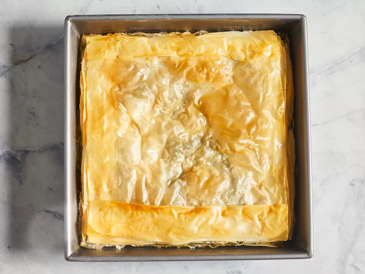

Spanakopita (Greek Spinach Pie)

Description
This is an authentic Greek spanakopita pie recipe featuring layers of crispy, flaky phyllo dough and a rich spinach and feta cheese filling. Serve warm for an impressive but easy to make vegetarian main dish.
Ingredients
- 3 tablespoons olive oil
- 1 large onion, chopped
- 1 bunch green onions, chopped
- 2 cloves garlic, minced
- 2 pounds spinach, rinsed and chopped
- ½ cup chopped fresh parsley
- 1 cup crumbled feta cheese
- ½ cup ricotta cheese
- 2 large eggs, lightly beaten
- 8 sheets phyllo dough
- ¼ cup olive oil, or as needed